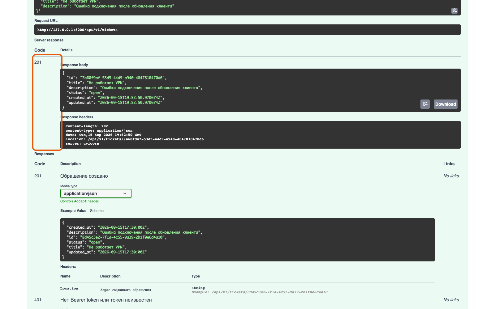
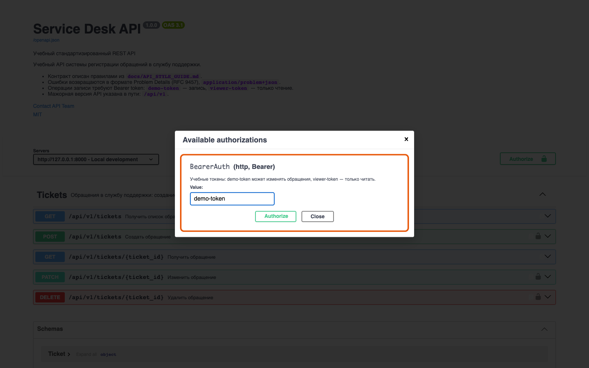

Справочник «Стандартизация HTTP API» · модуль 3 · OpenAPI
Глава 3.4
Swagger UI
и ReDoc
Описание из предыдущих глав — это JSON, который человеку читать тяжело. Поверх него ставят интерфейс. Их два, и они решают разные задачи: в одном пробуют запросы руками, второй показывают тому, кто только читает. В этой главе — что умеет каждый и когда какой открывать.
- Категория
- Описание контракта
- Уровень
- Базовый
- Связанные главы
- 3.3 FastAPI и OpenAPI · 7.3 Публикация документации · 2.3 Коды ответов
- Зачем это знать
- Чтобы проверять API без установки инструментов и показывать контракт коллегам
§1Два интерфейса поверх одного файла
Ни Swagger UI, ни ReDoc ничего не знают о вашем коде. Оба читают один и тот же openapi.json и рисуют его по-своему. Отсюда важное следствие: если в интерфейсе чего-то не хватает — дело не в интерфейсе, а в описании, а значит, в коде.
кто что читает
Нужен тому, кто проверяет: подставить параметры, нажать кнопку, увидеть настоящий ответ и заголовки. Экран рабочий, плотный, с формами.
Нужен тому, кто изучает: прочитать подряд, найти операцию в оглавлении, разобраться в схемах. Экран спокойный, трёхколоночный, без кнопок отправки.
§2Swagger UI: как устроен экран
Откройте http://127.0.0.1:8000/docs. Экран делится на три части: шапка с метаданными, список операций по группам и раздел схем внизу.

GET, синий POST, оранжевый PATCH, красный DELETE. Справа от адреса — summary операции.info и servers.infotags. Внутри — операции этой группы.tagscomponents.schemas с полями, типами и обязательностью.componentsВнутри раскрытой операции у каждого ответа есть вкладки Example Value и Schema. Первая показывает готовый пример, вторая — правила: типы, ограничения, обязательные поля. Когда спорят, «что должно приходить», смотрят вторую.
§3Выполнить запрос из браузера
Главное отличие Swagger UI: запрос можно отправить, не выходя из страницы. Порядок один и тот же для любой операции.
- Раскройте операцию — щелчок по её строке.
- Нажмите «Try it out» — поля формы станут доступными для ввода.
- Заполните параметры и тело. Тело подставляется из примера в схеме, его достаточно поправить.
- Нажмите «Execute». Браузер отправит настоящий запрос на выбранный сервер.
- Прочитайте ответ — код, тело, заголовки и готовая команда curl для повторения в терминале.

201 Created, тело с полями созданного ресурса и заголовки ответа. Блок Curl над ответом — та же операция строкой для терминала; её удобно скопировать в отчёт или задачу.«Execute» — это не симуляция. Данные создаются, изменяются и удаляются на том сервере, который выбран в списке servers. Проверьте выбранный сервер перед тем, как нажимать DELETE.
§4Авторизация в Swagger UI
Операции записи в учебном сервисе требуют токен. Swagger UI знает об этом из раздела security — рядом с такими операциями стоит значок замка, а в шапке есть кнопка Authorize.

BearerAuth — то самое, что объявлено в components.securitySchemes. Введённый токен Swagger UI подставляет в заголовок Authorization: Bearer … во все последующие запросы.Если запрос без токена — сервис ответит 401, если токен есть, но прав не хватает — 403. Разницу между этими кодами разбирали в главе 2.3; здесь важно, что оба ответа видно в том же окне, сразу после «Execute».
Страница документации может быть развёрнута кем угодно и отправлять запросы куда угодно. Токен от рабочего контура вводят только в документацию своего сервиса, на проверенном адресе.
§5Что видно в ответе, кроме тела
Начинающие смотрят только на тело ответа. Половина контракта живёт в заголовках, и Swagger UI показывает их в блоке Response headers.

etag для условных запросов, location с адресом созданного ресурса и x-request-id для поиска записи в журнале. Заголовки видны в браузере только потому, что сервис перечислил их в настройке CORS expose_headers — без этого браузер их скрывает.Устаревшие операции интерфейс тоже помечает: заголовок перечёркнут, рядом плашка deprecated. Это поле deprecated: true в описании — предупреждение читателю до того, как он начнёт писать код.

Deprecation и Sunset — об этом модуль 5.§6ReDoc: документация для чтения
Тот же контракт по адресу http://127.0.0.1:8000/redoc выглядит иначе: слева оглавление, в центре текст, справа примеры запросов и ответов.

tags и операций, правая панель показывает пример запроса и примеры ответов по кодам. Кнопки «отправить» здесь нет — и это осознанное решение авторов.200, 401, 404 — видно, что приходит в каждом случае.ответыReDoc удобно показывать заказчику, аналитику или преподавателю: страница читается сверху вниз, и на ней нет кнопки, отправляющей запрос на рабочий сервер. Её же публикуют как статический сайт — в учебном проекте она собирается на GitHub Pages, и это отдельная глава модуля 7.

§7Как их подключают
FastAPI даёт оба интерфейса сразу, без установки: /docs и /redoc появляются вместе с приложением. Но в учебном проекте адрес /redoc задан вручную — и на это есть причина.
REDOC_JS_URL = "https://cdn.jsdelivr.net/npm/redoc@2.5.4/bundles/redoc.standalone.js" app = FastAPI(…, redoc_url=None) @app.get("/redoc", include_in_schema=False) def redoc_html(): return get_redoc_html(openapi_url=app.openapi_url, title=…, redoc_js_url=REDOC_JS_URL)
Встроенный вариант ссылается на адрес redoc@next, который у поставщика библиотеки возвращает 404 — страница открывалась пустой. Поэтому версия закреплена: redoc@2.5.4. Это общее правило работы с внешними адресами: закрепляйте версию, иначе ваша страница зависит от чужих изменений.
Иногда документацию не выкладывают наружу. Тогда задают docs_url=None и redoc_url=None, а описание публикуют отдельно — например, статической страницей за авторизацией. Сам файл openapi.json при этом остаётся в репозитории и никуда не девается.
§8Что выбрать под задачу
| Задача | Куда идти | Почему |
|---|---|---|
| Проверить, что операция работает | Swagger UI | Отправляет настоящий запрос и показывает код, тело и заголовки |
| Показать контракт заказчику | ReDoc | Читается как документ, нет кнопок, которые что-то изменят |
| Разобраться во вложенной схеме | ReDoc | Схемы разворачиваются по месту, с ограничениями полей |
| Получить готовую команду curl | Swagger UI | Блок Curl под ответом копируется целиком |
| Дать ссылку на конкретную операцию | ReDoc | У каждой операции свой адрес в оглавлении |
| Проверить ответ на неверные данные | Swagger UI | Можно сломать запрос намеренно и увидеть 422 |
Выбор между ними определяется задачей: изменить состояние сервиса или прочитать контракт.
§9Частые ошибки
ETag, Location, X-Request-Id — тоже часть контракта, и они видны рядом.@next в любой момент перестаёт работать, и страница открывается пустой.§10Проверьте себя
- Почему в Swagger UI не может появиться операция, которой нет в описании?
- Чем вкладка Schema полезнее вкладки Example Value в споре о формате данных?
- Что делает кнопка Authorize и в какой заголовок попадает введённый токен?
- Почему заголовки ответа видны в браузере не всегда и какая настройка сервиса за это отвечает?
- Какой из двух интерфейсов вы откроете, чтобы показать контракт заказчику, и почему именно его?
- Зачем в проекте закреплена версия
redoc@2.5.4, а не «последняя»?
/docs — Swagger UI/redoc — ReDoc/openapi.json — описаниеTry it outзаполнить поляExecuteкод, тело, заголовкикод состоянияResponse headersблок Curlпусто в UI = пусто в описанииверсию библиотеки закреплятьСправочник «Стандартизация HTTP API» · модуль 3 · глава 3.4Макаров Максим Николаевич